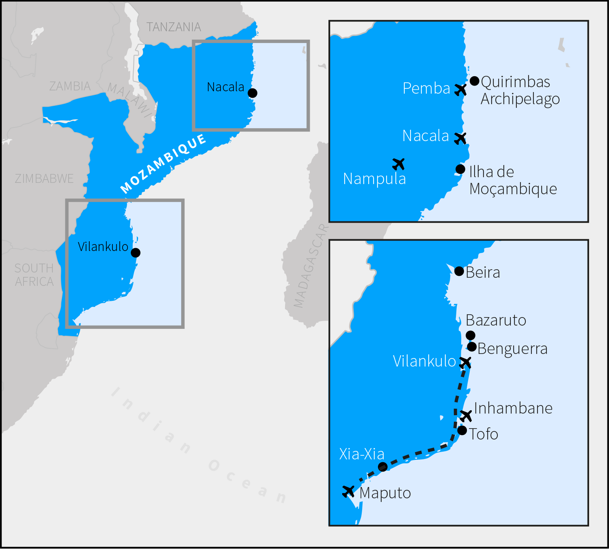
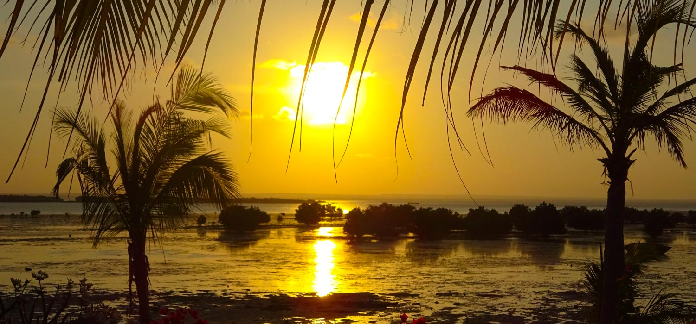

It is 40 years since Bob Dylan wrote his lovely, catchy ditty; 40 years since independence from Portugal; and, as one of my guides put it, "Mozambique is finally starting to grow up".
Only starting, mind you. After the ten year war with Portugal ended in 1974, Mozambique plunged into civil war until 1992 — in which a million people died from fighting or starvation and five million were displaced — so like much of Africa the country was off-limits as the global tourist boom began. Since regular elections were instituted in 1994, it has been a one-party state, dominated by the Front for Liberation of Mozambique (FRELIMO). The latest disputed ballot was at the start of 2015.
It certainly feels peaceful and safe these days, although there is no such thing as gay rights. But this climate has fostered a bureaucratic environment in which corruption is endemic. At the top, this has recently involved contracts with energy companies to exploit the natural resources of the north. For tourists, it will be limited to petty checks on the roads by fat police officers looking at quick cash for made-up crimes like leaning your elbow out of the window while driving. Just stick within the strict speed limits to reduce the chances of being pulled over, and keep on you no more than 400 meticais (roughly $40 right now) to pay the bribe to avoid a long delay, and you will be fine. Everybody knows the game and it's all done with a smile.
But Mozambique is growing up, nonetheless. Tourist essentials like English, ATMs and mobile reception are all widespread. Maputo is a vibrant building site, with mega-projects under construction across the capital: a new ring road, a bridge to the beaches of Catembe and the south, and loads of office developments. You will see new airports, aeroplanes, roads and hotels at all the main tourist hubs. (Much of this is funded by China in return for licenses to take precious trees, rhino horns and manta wings for hocus-pocus medicines.)
It is getting much easier to access the country. And to be clear from the outset: Mozambique is worth accessing as it is one of the very best coastal holiday destinations on the planet. Among much else, its highlights include: near enough 2,500 kilometres of unspoiled fine, white sand beaches; gorgeous warm, clear seas with world class diving and fishing; along with at least two of the dreamiest, empty island get-aways imaginable.
Maputo is a tidy little city, with no litter or graffiti, and a clutch of modern business hotels on the north east coast of the peninsula. The imposing Polana Serena, built in 1922 and modernised in 2010, is an East African landmark, with a new gym and spa, an excellent breakfast, including perfect porridge, and exceptional views from the pool across the Indian Ocean.
There is not much to see beyond the nineteenth-century Portuguese fort (Fortaleza da Nossa Senhora da Conceição) and Independence Square with its central statue of the highly-revered first president Samora Machel (a gift from Kim Il-Sung), beautifully bordered by the town hall and the cathedral. But one unusual experience is Barracas do Museo, a vast network of tiny corrugated iron stalls, each a bar, restaurant or hive of black market shinanigans.
People increasingly come to Maputo as an easy base to access the Kruger National Park just an hour away. But I took a day trip to the pocket-sized nearby country of Swaziland to see the rhino at Hlane Royal National Park, watch a traditional dance at the rather cheesy cultural village of Mantegna Reserve, and eat a steak in the astonishingly modern capital city of Mbabane. Pointedly, occasional road hoardings announce: "Zero corruption = 100% development".
The most visited places in Mozambique are Tofo and Vilankulo, and though you can fly from Maputo with LAM, the national carrier, it is much more fun to drive and take in several other beautiful spots along the way. The main highway, EN1, parallels the sea inland, so to reach the coast you need to turn onto a sandy track each time, of anything up to 50km, making a 4x4 essential. Only Europcar allows you to drop off at your likely destinations of Inhambane or Vilankulo, and the office is right next to the Polana Serena.
Mozambicans generally drive carefully and they drive on the left, though be warned that filling stations can be rare in the countryside. Stopping now and then to buy cashews, stubby bananas or bright oranges from roadside vendors, I crossed the Limpopo and arrived after about four hours in Xia-Xia. It's another 15km to get to Praia do Xia-Xia where there is a 3km sand track behind the dunes hiding a dozen or so hotels and self-catering chalets.
Though it has nothing special to offer on land, Xia-Xia is a convenient stop-off. The principal reason for coming here is the world class fishing, and it's easy to rent a motor-boat with a skipper and guide to show you exactly what to do. We set off at 6am with the mist lying hauntingly in the dunes. By 10, with turtles sunning themselves on the water, we had been visited by a small pod of dolphins and were listening to the light slurping of the swell against the hull. Having caught a dozen or so bottom fish, such as red snapper, one of the reels suddenly whirred as something serious had snagged the bait and shot off for its life. Ten minutes later I was taking pictures with a 30lb barracuda. Pleased though I was, that was actually small fry. In the big game season between November and February, sailfish and gigantic marlin are the target.
Back along EN1 another hour or two, around Quissico, there is a series of large deep blue lakes that almost meet the ocean, creating thin slivers of land with fresh water on one side and sea on the other. The waves break gently in rolls of four or five lines of white surf along pristine beaches; yet tourists here are as rare and surprising as Crusoe's footprint.
A further three hours through the forest of palm trees, the road splits. Don't go north to Maxixe; instead turn north east to the peninsula and Inhambane, where there are daily flights to-and-from Johannesburg and Maputo. From here, it's just another half hour east to Tofo.
Praia do Tofo is a very special place indeed: the kind you dream about, that seems perfect when you arrive but still manages to grow on you until you just don't want to leave.
The tiny village is set well back from the sea: there is a pleasant market, with cute bars and restaurants, and the sandy centre is easy to walk around barefoot. The bay sweeps round for about 5km — the beach is 30 to 60 metres deep to the sea, depending on the tide — and it is fringed with several small buildings. The largest of these is Hotel Tofo Mar, and though smartly renovated in 2012 and would look good in Wallpaper, to me it felt just a little anti-sceptic. The true gem is Casa na Praia, built in 2013 with local materials to create an authentic African vibe; it has a handful of rooms right on the beach at the eastern end, each with their own loungers and terrace, the ideal spot for a piña colada to watch the sun go down.
This is all idyllic enough. But the real joys of Tofo are in the water. This is home to the global Marine Megafauna Foundation for very good reasons. Docile whale sharks, at 12 metres long the world's biggest fish, are here between June and December. So are humpback whales, weighing up to 35 tonnes, which can often be seen from the beach breaching right out of the water a few hundred metres out to sea. And the stars of the show, manta rays with bags of personality and 5 metre wing spans, appearing from the murk like spaceships, are present all year round.
PADI highlights one particular dive site at Tofo as exceptional, but in fact there are many. There are lots of manta cleaning stations and whale song can be heard echoing underwater all around the bay. There are four dive centres, which seem much of a muchness: Diversity Scuba, Liquid Dive Adventures, Peri-Peri Divers and Tofo Scuba. All offer trips to snorkel with whale sharks, half-day safaris to get close enough to humpbacks to hear them spouting, as well as scuba diving from small ribs.
A 20 minute drive to the north end of the peninsula is the Green Turtle on remote Praia da Barra, by popular rumour the best restaurant in Mozambique. Right on the empty beach, adorned with tribal masks, it serves all the country's piquant dishes: chicken piri piri, fish curry, octopus carpaccio and prawn matapa (made from cassava leaves).
Reluctantly, in the end I moved on back up EN1, past the photogenic marker of the Tropic of Capricorn, just before the signs warning that there may be elephants crossing the road, reaching Vilankulo in another four hours. There are flights here for Maputo and Tofo every day.
Vilankulo is a much bigger town, spread along 5km of coast, though by no stretch of the imagination is this over-developed either: half the streets are recently laid with intricate cobbles; the other half are basic sand tracks. There are plenty of decent conventional hotels, and you need to choose one that feels right for you because in contrast to Tofo there is not that much to do in the town and there is not much common beach.
The glorious attraction is the Bazaruto National Park, a series of small islands an hour's boat ride away. From the top of Bazaruto's main sand dune you get a spectacular panorama across the ocean, which offers every conceivable shade of the colour blue, speckled with sandbanks of pure white which rise up as the tide falls away.
The largest islands, Bazaruto and Benguerra, each house two all-inclusive luxurious lodges, usually reached by helicopter, which is why the regional transport facilities are so good. But you can easily hire a dhow in Vilankulo to visit the islands for a day on the beach, see the humpbacks, do some fishing or just watch the sun set. The dominant dive centre in town is Odyssea Dive at Casa Babi.
In my three weeks, I met only one couple who were travelling both north and south of Vilankulo, as I did. Most in the south were spending a week on the beach and a week in Kruger. And most in the north had come from Tanzania or Malawi. They felt like very different halves of Mozambique and very different holidays.
The south has many more visitors. It faces the South African tourist market. So much so that in some places you should check if the price is quoted in meticais or rand as there is quite a disparity. And you would be well advised not to come during the South African school holidays when the place is over-run. The best time is July to September: the facilities are not booked up; there is little rain and no humidity; in fact, it is a very clean heat. Although there are nets everywhere, there are very few mosquitoes at this time of year.
The north is more tropical and more Islamic, with strong Arabian architectural and cultural influences, but with lots of Europeans in the tourist industry. There is more manufacturing and fewer police checks. Inland is the stronghold of the rival Mozambique Resistance Movement (RENAMO) so it was littered with landmines in the civil war, though they are now mostly cleared and on the coast you would not be anywhere near them. The distances are so vast, and there are only two main stops, that it is best to take flights. But the effort is really worth it.
To get from Vilankulo to Nacala in the north I had to fly south via Maputo. There were no taxis at the airport, so I persuaded with $100 a guy in the rent-a-car stand to drive me the two hours to Mozambique's only UNESCO World Heritage Site, Ilha de Mozambique. We left the mainland, crossed the recently renovated 3.5km single file bridge, and entered a by-gone era.
This is where Vasco da Gama landed in 1498. By 2098, it may become like Stone Town in Zanzibar, a perfectly restored monument for tourists; but for the foreseeable future it is original, low key and cut off.
There are several boutique guesthouses, some owned by bohemian European architects, and a large Portuguese hotel is opening imminently. The outstanding place to stay is the Villa Sands, a former storage shed for cashew nuts, with just eleven rooms and a chilled-out terrace-deck where you can hear the sea gently gurgling while you eat sizzling lobster.
The ideal way to see the island is by bicycle, and you can get round it all in half a day. The north is the former Portuguese stronghold: stone houses, cobbled streets, and a colonial atmosphere. The governor's mansion is now a museum, there are two stunning churches, and a vast fortress, to keep out the Dutch, which contains the oldest extant European building in the southern hemisphere, the chapel dating from 1522.
An ancient street marks the old border, across which slaves were traded and brutally shipped to the west. There are stone slums here now, though most people in the south live in nearby Macuti villages, homes of flattened coconut with thatched roofs. This half of the island lives from fishing; the other on tourism.
A beautiful way to end the day is to take a dhow out to the Goa Island lighthouse for the sunset views back across Ilha de Mozambique. It takes only an hour in an 8 metre boat; but for the three crew you will be completely alone.
It is a two and a half hour drive back to Nampula for the 30 minute flight to Pemba, an industrial centre side-by-side with Wimbe, a long beach crammed at weekends with locals. Pemba is the gateway to the Quirimbas Archipelago, and the jewel in the necklace is Ibo, which is on the UNESCO World Heritage Site Tentative List.
It is possible to take a boat, but it isn't quick. However, I discovered that virtually all the local light aircraft had been commandeered by the recently arrived Qatari royal family to get to Vamizi, one of the islands here that they own, and the only scheduled flight of the day to Ibo was full; all four seats had been taken. So I had to persuade the pilot to do an extra run; just for me.
The Cherokee is operated by CR Aviation, whose logo is — appropriately — a paper plane. As I climbed in next to the pilot, he said: "I don't want to get your hopes up too high, but on this route at this time of the year we often get a great view of the humpbacks breaching."
The Quirimbas are everybody's idea of tropical paradise and in the 30 minute flight, skimming just above the sea, you get a breath-taking view from the cockpit. Ibo itself is formed from coral, much larger than Ilha de Mozambique, though inhabited only at the north-west corner; it is palm-tree light green in the centre, edged by darker green mangroves, rising out of the aqua blue. It was immediately obvious that Mozambique had saved the best til last.
As we approached the short sand and grass bumpy track that serves as the runway, goats scattered just ahead of us. The terminal amounted to a tiny concrete arch with a bloke standing under it waving a clipboard to sign anyone on and off the island. Airport transfer was by moped.
It is just 2km to the edge of town and my first impressions were over-whelming. The once formidable Portuguese and Indian buildings along the main street are derelict like Pompeii. This avenue opens into a large empty plaza, with crumbling single storey buildings on all sides, creating the air of a ghost town. The wide road itself is soft sand, grooved with footprints and tyre tracks from a few bikes and the nine motor vehicles on the island. This is not like say Haiti, where you are not expected to go; you are very much wanted here, but so few people actually come. It felt like frontier tourism.
It turned out not to be completely deserted. Amid the ruins are two gorgeous small hotels, each with exceptional restaurants: Cinco Portas and Miti Miwiri.
But Ibo Island Lodge is in a league of its own. The former governor's palace was bought in the 1990s for just $2,500; two neighbouring mansions were added and the whole area renovated with style and opened as an hotel in 2006. There are high ceilings, antique club chairs, noisy village weavers busying themselves in the garden, and sun loungers beside each of the two pools. It feels like the mid twentieth century at the latest. The atmosphere is tranquil and the staff from central casting. On arrival, you are given a mobile phone so at any moment you can call for whatever you want.
The top floor open-air bar faces the sunset, beneath scarlet cotton clouds sketched onto the clear sky, where you can also see the tide coming in-and-out every six hours. It is here each evening that you can book your activities for the following day. There is an early morning bird-watching tour. And a guided walk through the history of the island via three atmospheric forts, which were mostly used as prisons for slaves, and the tiniest souvenir shacks selling carved ebony pots and local metalwork jewellery. And a cultural visit to meet the locals, including Macua women who cover their faces in a striking white paste. (Wherever you go, take pens, which are in hot demand from the kids.) There are also dhows to sandbank beaches for sun-bathing, kayaks to explore the mangroves, and motor-boats to nearby islands, as well as snorkelling and diving with classic tropical fish. For a romantic dinner, they will set a table for you on the small beach, in the garden or on your own terrace.
The island was a major trading centre from the 1700s and then gradually abandoned by the Portuguese and Indians throughout the twentieth century as it lost its strategic and economic importance. They withdrew totally in 1975, since when it has hardly changed. Electricity arrived as recently as 2012. And the witch doctor is still the only medic.
Though Ibo feels trapped in time, Mozambique has been through a lot in the past 40 years and started to do some growing up recently. And while it still needs to address problems of political pluralism, corruption and human rights, the economy is in good shape and the outlook for tourists is on the up-and-up. For an adventure traveller always looking to the next place, I leave with the rare conviction that we will meet again.